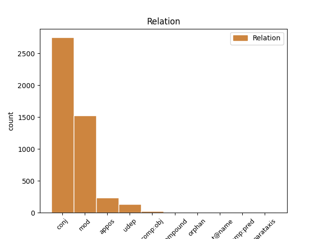
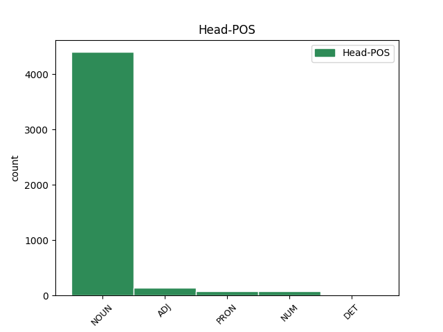
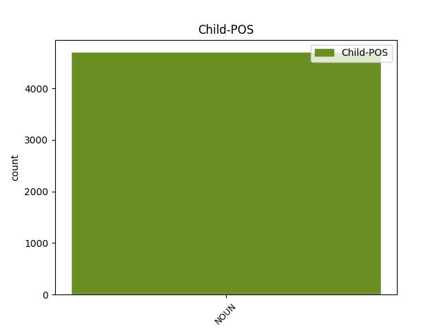

Distribution of features within this leaf



Agreement Rules sorted by frequency.
- When the dependent token is the conjunct(conj) of the head token, and the head token is NOUN and the dependent token is NOUN.
1 Du _ _ _ _ 0 _ _ _
2 må _ _ _ _ 0 _ _ _
3 være _ _ _ _ 0 _ _ _
4 innstilt _ _ _ _ 0 _ _ _
5 på _ _ _ _ 0 _ _ _
6 at _ _ _ _ 0 _ _ _
7 du _ _ _ _ 0 _ _ _
8 kan _ _ _ _ 0 _ _ _
9 få _ _ _ _ 0 _ _ _
10 fire _ _ _ _ 0 _ _ _
11 årstider _ _ _ _ 0 _ _ _
12 på _ _ _ _ 0 _ _ _
13 en _ _ _ _ 0 _ _ _
14 dag _ _ _ _ 0 _ _ _
15 , _ _ _ _ 0 _ _ _
16 mye _ _ _ _ 0 _ _ _
17 tåke _ _ _ _ 0 _ _ _
18 , _ _ _ _ 0 _ _ _
19 vind vind NOUN _ Definite=Ind|Gender=Masc|Number=Sing 0 _ _ _
20 og _ _ _ _ 0 _ _ _
21 regn regn NOUN _ Definite=Ind|Gender=Neut|Number=Sing 19 conj _ _
22 , _ _ _ _ 0 _ _ _
23 men _ _ _ _ 0 _ _ _
24 det _ _ _ _ 0 _ _ _
25 blir _ _ _ _ 0 _ _ _
26 aldri _ _ _ _ 0 _ _ _
27 veldig _ _ _ _ 0 _ _ _
28 kaldt _ _ _ _ 0 _ _ _
29 . _ _ _ _ 0 _ _ _
1 Flyprisen _ _ _ _ 0 _ _ _
2 varierer _ _ _ _ 0 _ _ _
3 , _ _ _ _ 0 _ _ _
4 men _ _ _ _ 0 _ _ _
5 ligger _ _ _ _ 0 _ _ _
6 på _ _ _ _ 0 _ _ _
7 rundt _ _ _ _ 0 _ _ _
8 2500 _ _ _ _ 0 _ _ _
9 kr. _ _ _ _ 0 _ _ _
10 - _ _ _ _ 0 _ _ _
11 3500 _ _ _ _ 0 _ _ _
12 kr. _ _ _ _ 0 _ _ _
13 tur tur NOUN _ Definite=Ind|Gender=Masc|Number=Sing 0 _ _ _
14 retur retur NOUN _ Definite=Ind|Gender=Masc|Number=Sing 13 mod _ _
15 fra _ _ _ _ 0 _ _ _
16 Bergen _ _ _ _ 0 _ _ _
17 . _ _ _ _ 0 _ _ _
1 Færøyske _ _ _ _ 0 _ _ _
2 Atlantic _ _ _ _ 0 _ _ _
3 Airways _ _ _ _ 0 _ _ _
4 flyr _ _ _ _ 0 _ _ _
5 direkte _ _ _ _ 0 _ _ _
6 fra _ _ _ _ 0 _ _ _
7 Bergen _ _ _ _ 0 _ _ _
8 til _ _ _ _ 0 _ _ _
9 Vágar _ _ _ _ 0 _ _ _
10 lufthavn _ _ _ _ 0 _ _ _
11 på _ _ _ _ 0 _ _ _
12 Færøyene _ _ _ _ 0 _ _ _
13 to _ _ _ _ 0 _ _ _
14 ganger gang NOUN _ Definite=Ind|Gender=Masc|Number=Plur 0 _ _ _
15 i _ _ _ _ 0 _ _ _
16 uken _ _ _ _ 0 _ _ _
17 , _ _ _ _ 0 _ _ _
18 onsdager onsdag NOUN _ Definite=Ind|Gender=Masc|Number=Plur 14 appos _ _
19 og _ _ _ _ 0 _ _ _
20 søndager _ _ _ _ 0 _ _ _
21 . _ _ _ _ 0 _ _ _
1 Noen _ _ _ _ 0 _ _ _
2 av _ _ _ _ 0 _ _ _
3 Nordens _ _ _ _ 0 _ _ _
4 beste _ _ _ _ 0 _ _ _
5 kokker _ _ _ _ 0 _ _ _
6 laget _ _ _ _ 0 _ _ _
7 et _ _ _ _ 0 _ _ _
8 manifest _ _ _ _ 0 _ _ _
9 som _ _ _ _ 0 _ _ _
10 blant _ _ _ _ 0 _ _ _
11 annet _ _ _ _ 0 _ _ _
12 slo _ _ _ _ 0 _ _ _
13 fast _ _ _ _ 0 _ _ _
14 at _ _ _ _ 0 _ _ _
15 " _ _ _ _ 0 _ _ _
16 vi vi PRON _ Animacy=Hum|Case=Nom|Number=Plur|Person=1|PronType=Prs 0 _ _ _
17 nordiske _ _ _ _ 0 _ _ _
18 kokker kokk NOUN _ Definite=Ind|Gender=Masc|Number=Plur 16 appos _ _
19 finner _ _ _ _ 0 _ _ _
20 tiden _ _ _ _ 0 _ _ _
21 moden _ _ _ _ 0 _ _ _
22 til _ _ _ _ 0 _ _ _
23 å _ _ _ _ 0 _ _ _
24 skape _ _ _ _ 0 _ _ _
25 et _ _ _ _ 0 _ _ _
26 nytt _ _ _ _ 0 _ _ _
27 nordisk _ _ _ _ 0 _ _ _
28 kjøkken _ _ _ _ 0 _ _ _
29 , _ _ _ _ 0 _ _ _
30 som _ _ _ _ 0 _ _ _
31 i _ _ _ _ 0 _ _ _
32 kraft _ _ _ _ 0 _ _ _
33 av _ _ _ _ 0 _ _ _
34 sin _ _ _ _ 0 _ _ _
35 velsmakenhet _ _ _ _ 0 _ _ _
36 og _ _ _ _ 0 _ _ _
37 egenart _ _ _ _ 0 _ _ _
38 kan _ _ _ _ 0 _ _ _
39 måle _ _ _ _ 0 _ _ _
40 seg _ _ _ _ 0 _ _ _
41 med _ _ _ _ 0 _ _ _
42 de _ _ _ _ 0 _ _ _
43 største _ _ _ _ 0 _ _ _
44 kjøkken _ _ _ _ 0 _ _ _
45 i _ _ _ _ 0 _ _ _
46 verden _ _ _ _ 0 _ _ _
47 " _ _ _ _ 0 _ _ _
48 . _ _ _ _ 0 _ _ _
1 Vi _ _ _ _ 0 _ _ _
2 har _ _ _ _ 0 _ _ _
3 en _ _ _ _ 0 _ _ _
4 utlendingslov _ _ _ _ 0 _ _ _
5 med _ _ _ _ 0 _ _ _
6 kriterier _ _ _ _ 0 _ _ _
7 for _ _ _ _ 0 _ _ _
8 dette _ _ _ _ 0 _ _ _
9 , _ _ _ _ 0 _ _ _
10 og _ _ _ _ 0 _ _ _
11 det _ _ _ _ 0 _ _ _
12 er _ _ _ _ 0 _ _ _
13 de de PRON _ Case=Nom|Number=Plur|Person=3|PronType=Prs 0 _ _ _
14 som _ _ _ _ 0 _ _ _
15 tilfredsstiller _ _ _ _ 0 _ _ _
16 disse _ _ _ _ 0 _ _ _
17 kriteriene _ _ _ _ 0 _ _ _
18 , _ _ _ _ 0 _ _ _
19 som _ _ _ _ 0 _ _ _
20 får _ _ _ _ 0 _ _ _
21 opphold _ _ _ _ 0 _ _ _
22 , _ _ _ _ 0 _ _ _
23 ikke _ _ _ _ 0 _ _ _
24 såkalte _ _ _ _ 0 _ _ _
25 lykkejegere lykkejeger NOUN _ Definite=Ind|Gender=Masc|Number=Plur 13 conj _ _
26 – _ _ _ _ 0 _ _ _
27 slik _ _ _ _ 0 _ _ _
28 at _ _ _ _ 0 _ _ _
29 ikke _ _ _ _ 0 _ _ _
30 den _ _ _ _ 0 _ _ _
31 misforståelsen _ _ _ _ 0 _ _ _
32 skal _ _ _ _ 0 _ _ _
33 bli _ _ _ _ 0 _ _ _
34 hengende _ _ _ _ 0 _ _ _
35 igjen _ _ _ _ 0 _ _ _
36 . _ _ _ _ 0 _ _ _
1 Trendy _ _ _ _ 0 _ _ _
2 kafeer _ _ _ _ 0 _ _ _
3 og _ _ _ _ 0 _ _ _
4 designbutikker _ _ _ _ 0 _ _ _
5 ligger _ _ _ _ 0 _ _ _
6 blant _ _ _ _ 0 _ _ _
7 flere _ _ _ _ 0 _ _ _
8 hundre _ _ _ _ 0 _ _ _
9 år år NOUN _ Definite=Ind|Gender=Neut|Number=Plur 10 udep _ _
10 gamle gammel ADJ _ Degree=Pos|Number=Plur 0 _ _ _
11 bygninger _ _ _ _ 0 _ _ _
12 . _ _ _ _ 0 _ _ _
1 Vi _ _ _ _ 0 _ _ _
2 norske _ _ _ _ 0 _ _ _
3 muslimer _ _ _ _ 0 _ _ _
4 ønsker _ _ _ _ 0 _ _ _
5 godt _ _ _ _ 0 _ _ _
6 integrert _ _ _ _ 0 _ _ _
7 samfunn _ _ _ _ 0 _ _ _
8 hvor _ _ _ _ 0 _ _ _
9 muslimer _ _ _ _ 0 _ _ _
10 , _ _ _ _ 0 _ _ _
11 kristne kristen ADJ _ Degree=Pos|Number=Plur 0 _ _ _
12 , _ _ _ _ 0 _ _ _
13 jøder jøde NOUN _ Definite=Ind|Gender=Masc|Number=Plur 11 conj _ _
14 , _ _ _ _ 0 _ _ _
15 hinduer _ _ _ _ 0 _ _ _
16 , _ _ _ _ 0 _ _ _
17 ateister _ _ _ _ 0 _ _ _
18 og _ _ _ _ 0 _ _ _
19 så _ _ _ _ 0 _ _ _
20 videre _ _ _ _ 0 _ _ _
21 kan _ _ _ _ 0 _ _ _
22 leve _ _ _ _ 0 _ _ _
23 side _ _ _ _ 0 _ _ _
24 om _ _ _ _ 0 _ _ _
25 side _ _ _ _ 0 _ _ _
26 , _ _ _ _ 0 _ _ _
27 sier _ _ _ _ 0 _ _ _
28 han _ _ _ _ 0 _ _ _
29 . _ _ _ _ 0 _ _ _
1 Et _ _ _ _ 0 _ _ _
2 samfunn _ _ _ _ 0 _ _ _
3 der _ _ _ _ 0 _ _ _
4 kvinnen _ _ _ _ 0 _ _ _
5 er _ _ _ _ 0 _ _ _
6 underordnet underordnet ADJ _ Definite=Ind|Degree=Pos|Number=Sing 0 _ _ _
7 mannen mann NOUN _ Definite=Def|Gender=Masc|Number=Sing 6 comp:obj _ _
8 . _ _ _ _ 0 _ _ _
1 Ikke _ _ _ _ 0 _ _ _
2 sånn _ _ _ _ 0 _ _ _
3 « _ _ _ _ 0 _ _ _
4 nå _ _ _ _ 0 _ _ _
5 har _ _ _ _ 0 _ _ _
6 jeg _ _ _ _ 0 _ _ _
7 lært _ _ _ _ 0 _ _ _
8 » _ _ _ _ 0 _ _ _
9 -type -type NOUN _ Definite=Ind|Gender=Masc|Number=Sing 10 mod _ _
10 voksen voksen ADJ _ Definite=Ind|Degree=Pos|Number=Sing 0 _ _ _
11 . _ _ _ _ 0 _ _ _
1 Signalet signal NOUN _ Definite=Def|Gender=Neut|Number=Sing 18 mod _ _
2 om _ _ _ _ 0 _ _ _
3 forskning _ _ _ _ 0 _ _ _
4 på _ _ _ _ 0 _ _ _
5 CO2-frie _ _ _ _ 0 _ _ _
6 gasskraftverk _ _ _ _ 0 _ _ _
7 og _ _ _ _ 0 _ _ _
8 en _ _ _ _ 0 _ _ _
9 prioritering _ _ _ _ 0 _ _ _
10 av _ _ _ _ 0 _ _ _
11 det _ _ _ _ 0 _ _ _
12 innenfor _ _ _ _ 0 _ _ _
13 de _ _ _ _ 0 _ _ _
14 rammene _ _ _ _ 0 _ _ _
15 vi _ _ _ _ 0 _ _ _
16 har _ _ _ _ 0 _ _ _
17 , _ _ _ _ 0 _ _ _
18 det det PRON _ Gender=Neut|Number=Sing|Person=3|PronType=Prs 0 _ _ _
19 gav _ _ _ _ 0 _ _ _
20 jeg _ _ _ _ 0 _ _ _
21 til _ _ _ _ 0 _ _ _
22 representanten _ _ _ _ 0 _ _ _
23 Sanner _ _ _ _ 0 _ _ _
24 i _ _ _ _ 0 _ _ _
25 budsjettdebatten _ _ _ _ 0 _ _ _
26 i _ _ _ _ 0 _ _ _
27 fjor _ _ _ _ 0 _ _ _
28 høst _ _ _ _ 0 _ _ _
29 . _ _ _ _ 0 _ _ _
1 Motoren _ _ _ _ 0 _ _ _
2 takket _ _ _ _ 0 _ _ _
3 for _ _ _ _ 0 _ _ _
4 seg _ _ _ _ 0 _ _ _
5 , _ _ _ _ 0 _ _ _
6 og _ _ _ _ 0 _ _ _
7 dermed _ _ _ _ 0 _ _ _
8 ble _ _ _ _ 0 _ _ _
9 det _ _ _ _ 0 _ _ _
10 ingen _ _ _ _ 0 _ _ _
11 plassering _ _ _ _ 0 _ _ _
12 på _ _ _ _ 0 _ _ _
13 Strømøy _ _ _ _ 0 _ _ _
14 , _ _ _ _ 0 _ _ _
15 som _ _ _ _ 0 _ _ _
16 hadde _ _ _ _ 0 _ _ _
17 alle _ _ _ _ 0 _ _ _
18 tiders _ _ _ _ 0 _ _ _
19 sjanse _ _ _ _ 0 _ _ _
20 til _ _ _ _ 0 _ _ _
21 å _ _ _ _ 0 _ _ _
22 klatre _ _ _ _ 0 _ _ _
23 opp _ _ _ _ 0 _ _ _
24 på _ _ _ _ 0 _ _ _
25 seierspallen _ _ _ _ 0 _ _ _
26 for _ _ _ _ 0 _ _ _
27 aller _ _ _ _ 0 _ _ _
28 første _ _ _ _ 0 _ _ _
29 gang _ _ _ _ 0 _ _ _
30 i _ _ _ _ 0 _ _ _
31 et _ _ _ _ 0 _ _ _
32 formel formel NOUN _ Definite=Ind|Gender=Masc|Number=Sing 33 compound _ _
33 1-løp 1-løp NOUN _ Definite=Ind|Gender=Neut|Number=Sing 0 _ _ _
34 . _ _ _ _ 0 _ _ _
1 Men _ _ _ _ 0 _ _ _
2 nesten _ _ _ _ 0 _ _ _
3 hver _ _ _ _ 0 _ _ _
4 kveld _ _ _ _ 0 _ _ _
5 , _ _ _ _ 0 _ _ _
6 gjerne _ _ _ _ 0 _ _ _
7 klokka klokke NOUN _ Definite=Def|Gender=Fem|Number=Sing 8 udep _ _
8 ett én NUM _ Gender=Neut|Number=Sing|NumType=Card 0 _ _ _
9 på _ _ _ _ 0 _ _ _
10 natta _ _ _ _ 0 _ _ _
11 , _ _ _ _ 0 _ _ _
12 tar _ _ _ _ 0 _ _ _
13 Staveland _ _ _ _ 0 _ _ _
14 på _ _ _ _ 0 _ _ _
15 seg _ _ _ _ 0 _ _ _
16 topplue _ _ _ _ 0 _ _ _
17 , _ _ _ _ 0 _ _ _
18 tjukk _ _ _ _ 0 _ _ _
19 jakke _ _ _ _ 0 _ _ _
20 og _ _ _ _ 0 _ _ _
21 pledd _ _ _ _ 0 _ _ _
22 og _ _ _ _ 0 _ _ _
23 setter _ _ _ _ 0 _ _ _
24 seg _ _ _ _ 0 _ _ _
25 ut _ _ _ _ 0 _ _ _
26 på _ _ _ _ 0 _ _ _
27 terrassen _ _ _ _ 0 _ _ _
28 . _ _ _ _ 0 _ _ _
1 Tre _ _ _ _ 0 _ _ _
2 timers _ _ _ _ 0 _ _ _
3 egentrening egentrening NOUN _ Definite=Ind|Gender=Fem|Number=Sing 0 _ _ _
4 hver _ _ _ _ 0 _ _ _
5 dag dag NOUN _ Definite=Ind|Gender=Masc|Number=Sing 3 udep _ _
6 . _ _ _ _ 0 _ _ _
1 « _ _ _ _ 0 _ _ _
2 Er _ _ _ _ 0 _ _ _
3 det _ _ _ _ 0 _ _ _
4 akseptabelt akseptabel ADJ _ Definite=Ind|Degree=Pos|Gender=Neut|Number=Sing 0 _ _ _
5 å _ _ _ _ 0 _ _ _
6 lære _ _ _ _ 0 _ _ _
7 en _ _ _ _ 0 _ _ _
8 hel _ _ _ _ 0 _ _ _
9 generasjon _ _ _ _ 0 _ _ _
10 opp _ _ _ _ 0 _ _ _
11 i _ _ _ _ 0 _ _ _
12 hvordan _ _ _ _ 0 _ _ _
13 en _ _ _ _ 0 _ _ _
14 utøver _ _ _ _ 0 _ _ _
15 ondskap _ _ _ _ 0 _ _ _
16 ? _ _ _ _ 0 _ _ _
17 » _ _ _ _ 0 _ _ _
18 , _ _ _ _ 0 _ _ _
19 skrev _ _ _ _ 0 _ _ _
20 KrFs _ _ _ _ 0 _ _ _
21 Anita _ _ _ _ 0 _ _ _
22 Appelthun _ _ _ _ 0 _ _ _
23 Sæle _ _ _ _ 0 _ _ _
24 - _ _ _ _ 0 _ _ _
25 et _ _ _ _ 0 _ _ _
26 spørsmål spørsmål NOUN _ Definite=Ind|Gender=Neut|Number=Sing 4 appos _ _
27 som _ _ _ _ 0 _ _ _
28 blir _ _ _ _ 0 _ _ _
29 møtt _ _ _ _ 0 _ _ _
30 med _ _ _ _ 0 _ _ _
31 protester _ _ _ _ 0 _ _ _
32 fra _ _ _ _ 0 _ _ _
33 alle _ _ _ _ 0 _ _ _
34 fagpersoner _ _ _ _ 0 _ _ _
35 i _ _ _ _ 0 _ _ _
36 dataspill _ _ _ _ 0 _ _ _
37 Klassekampen _ _ _ _ 0 _ _ _
38 har _ _ _ _ 0 _ _ _
39 snakket _ _ _ _ 0 _ _ _
40 med _ _ _ _ 0 _ _ _
41 . _ _ _ _ 0 _ _ _
1 Som _ _ _ _ 0 _ _ _
2 for _ _ _ _ 0 _ _ _
3 mange _ _ _ _ 0 _ _ _
4 gutter _ _ _ _ 0 _ _ _
5 på _ _ _ _ 0 _ _ _
6 hans _ _ _ _ 0 _ _ _
7 alder _ _ _ _ 0 _ _ _
8 er _ _ _ _ 0 _ _ _
9 livet _ _ _ _ 0 _ _ _
10 som _ _ _ _ 0 _ _ _
11 en _ _ _ _ 0 _ _ _
12 lek _ _ _ _ 0 _ _ _
13 , _ _ _ _ 0 _ _ _
14 lørdagen lørdag NOUN _ Definite=Def|Gender=Masc|Number=Sing 0 _ _ _
15 en _ _ _ _ 0 _ _ _
16 stor _ _ _ _ 0 _ _ _
17 fest fest NOUN _ Definite=Ind|Gender=Masc|Number=Sing 14 orphan _ _
18 . _ _ _ _ 0 _ _ _
1 Risikoanalyse risikoanalyse NOUN _ Definite=Ind|Gender=Masc|Number=Sing 0 _ _ _
2 siste _ _ _ _ 0 _ _ _
3 håp håp NOUN _ Definite=Ind|Gender=Neut|Number=Sing 1 comp:pred _ _
1 Likevel _ _ _ _ 0 _ _ _
2 skal _ _ _ _ 0 _ _ _
3 ikke _ _ _ _ 0 _ _ _
4 oppstyret _ _ _ _ 0 _ _ _
5 få _ _ _ _ 0 _ _ _
6 meg _ _ _ _ 0 _ _ _
7 til _ _ _ _ 0 _ _ _
8 å _ _ _ _ 0 _ _ _
9 glemme _ _ _ _ 0 _ _ _
10 arbeidsoppgave _ _ _ _ 0 _ _ _
11 nummer nummer NOUN _ Definite=Ind|Gender=Neut|Number=Sing 12 udep _ _
12 en en DET _ Gender=Masc|Number=Sing|PronType=Art 0 _ _ _
13 , _ _ _ _ 0 _ _ _
14 nemlig _ _ _ _ 0 _ _ _
15 å _ _ _ _ 0 _ _ _
16 kjempe _ _ _ _ 0 _ _ _
17 meg _ _ _ _ 0 _ _ _
18 tilbake _ _ _ _ 0 _ _ _
19 på _ _ _ _ 0 _ _ _
20 laget _ _ _ _ 0 _ _ _
21 og _ _ _ _ 0 _ _ _
22 gjøre _ _ _ _ 0 _ _ _
23 alt _ _ _ _ 0 _ _ _
24 for _ _ _ _ 0 _ _ _
25 at _ _ _ _ 0 _ _ _
26 Molde _ _ _ _ 0 _ _ _
27 FK _ _ _ _ 0 _ _ _
28 snur _ _ _ _ 0 _ _ _
29 trenden _ _ _ _ 0 _ _ _
30 og _ _ _ _ 0 _ _ _
31 begynner _ _ _ _ 0 _ _ _
32 å _ _ _ _ 0 _ _ _
33 vinne _ _ _ _ 0 _ _ _
34 kamper _ _ _ _ 0 _ _ _
35 igjen _ _ _ _ 0 _ _ _
36 ! _ _ _ _ 0 _ _ _
1 I _ _ _ _ 0 _ _ _
2 tillegg _ _ _ _ 0 _ _ _
3 til _ _ _ _ 0 _ _ _
4 to _ _ _ _ 0 _ _ _
5 nye _ _ _ _ 0 _ _ _
6 , _ _ _ _ 0 _ _ _
7 ett én NUM _ Gender=Neut|Number=Sing|NumType=Card 0 _ _ _
8 om _ _ _ _ 0 _ _ _
9 kjendisarkitekt-onkelen _ _ _ _ 0 _ _ _
10 som _ _ _ _ 0 _ _ _
11 snakker _ _ _ _ 0 _ _ _
12 om _ _ _ _ 0 _ _ _
13 fasader _ _ _ _ 0 _ _ _
14 og _ _ _ _ 0 _ _ _
15 et _ _ _ _ 0 _ _ _
16 rom rom NOUN _ Definite=Ind|Gender=Neut|Number=Sing 7 conj _ _
17 med _ _ _ _ 0 _ _ _
18 det _ _ _ _ 0 _ _ _
19 gamle _ _ _ _ 0 _ _ _
20 familiepianoet _ _ _ _ 0 _ _ _
21 og _ _ _ _ 0 _ _ _
22 alle _ _ _ _ 0 _ _ _
23 familieportrettene _ _ _ _ 0 _ _ _
24 rundt _ _ _ _ 0 _ _ _
25 . _ _ _ _ 0 _ _ _
1 - _ _ _ _ 0 _ _ _
2 Det _ _ _ _ 0 _ _ _
3 er _ _ _ _ 0 _ _ _
4 ikke _ _ _ _ 0 _ _ _
5 en _ _ _ _ 0 _ _ _
6 veske _ _ _ _ 0 _ _ _
7 , _ _ _ _ 0 _ _ _
8 sa _ _ _ _ 0 _ _ _
9 Samantha _ _ _ _ 0 _ _ _
10 , _ _ _ _ 0 _ _ _
11 spilt _ _ _ _ 0 _ _ _
12 av _ _ _ _ 0 _ _ _
13 Kim _ _ _ _ 0 _ _ _
14 Cattrall _ _ _ _ 0 _ _ _
15 , _ _ _ _ 0 _ _ _
16 i _ _ _ _ 0 _ _ _
17 en _ _ _ _ 0 _ _ _
18 episode _ _ _ _ 0 _ _ _
19 av _ _ _ _ 0 _ _ _
20 « _ _ _ _ 0 _ _ _
21 Sex sex NOUN _ Definite=Ind|Gender=Masc|Number=Sing 0 _ _ _
22 og _ _ _ _ 0 _ _ _
23 singelliv singelliv NOUN _ Definite=Ind|Gender=Neut|Number=Sing 21 flat@name _ _
24 » _ _ _ _ 0 _ _ _
25 . _ _ _ _ 0 _ _ _
1 Noen noen DET _ Number=Plur|PronType=Ind 0 _ _ _
2 av _ _ _ _ 0 _ _ _
3 dem _ _ _ _ 0 _ _ _
4 er _ _ _ _ 0 _ _ _
5 vanedannende _ _ _ _ 0 _ _ _
6 ( _ _ _ _ 0 _ _ _
7 såkalte _ _ _ _ 0 _ _ _
8 benzodiazepiner benzodiazepin NOUN _ Definite=Ind|Gender=Neut|Number=Plur 1 appos _ _
9 ) _ _ _ _ 0 _ _ _
10 . _ _ _ _ 0 _ _ _
1 - _ _ _ _ 0 _ _ _
2 Den _ _ _ _ 0 _ _ _
3 ene _ _ _ _ 0 _ _ _
4 dreier _ _ _ _ 0 _ _ _
5 seg _ _ _ _ 0 _ _ _
6 om _ _ _ _ 0 _ _ _
7 et _ _ _ _ 0 _ _ _
8 overfall _ _ _ _ 0 _ _ _
9 , _ _ _ _ 0 _ _ _
10 den _ _ _ _ 0 _ _ _
11 andre andre ADJ _ Definite=Def|Degree=Pos|Number=Sing 0 _ _ _
12 en _ _ _ _ 0 _ _ _
13 trussel trussel NOUN _ Definite=Ind|Gender=Masc|Number=Sing 11 orphan _ _
14 . _ _ _ _ 0 _ _ _
1 TV-kanalen _ _ _ _ 0 _ _ _
2 mener _ _ _ _ 0 _ _ _
3 at _ _ _ _ 0 _ _ _
4 Senatet _ _ _ _ 0 _ _ _
5 vil _ _ _ _ 0 _ _ _
6 bestå _ _ _ _ 0 _ _ _
7 av _ _ _ _ 0 _ _ _
8 48 _ _ _ _ 0 _ _ _
9 demokrater _ _ _ _ 0 _ _ _
10 mot _ _ _ _ 0 _ _ _
11 republikanernes republikaner NOUN _ Case=Gen|Definite=Def|Gender=Masc|Number=Plur 12 mod _ _
12 42 42 NUM _ Number=Plur|NumType=Card 0 _ _ _
13 . _ _ _ _ 0 _ _ _
1 Takk takk NOUN _ Definite=Ind|Gender=Fem|Number=Sing 0 _ _ _
2 for _ _ _ _ 0 _ _ _
3 alle _ _ _ _ 0 _ _ _
4 gode _ _ _ _ 0 _ _ _
5 minner _ _ _ _ 0 _ _ _
6 kjære _ _ _ _ 0 _ _ _
7 venn venn NOUN _ Definite=Ind|Gender=Masc|Number=Sing 1 parataxis _ _
8 . _ _ _ _ 0 _ _ _
9 " _ _ _ _ 0 _ _ _
1 Denne _ _ _ _ 0 _ _ _
2 tonen _ _ _ _ 0 _ _ _
3 - _ _ _ _ 0 _ _ _
4 også _ _ _ _ 0 _ _ _
5 kalt kalle ADJ _ Definite=Ind|Number=Sing|VerbForm=Part 0 _ _ _
6 « _ _ _ _ 0 _ _ _
7 Djevelens _ _ _ _ 0 _ _ _
8 kvint kvint NOUN _ Definite=Ind|Gender=Masc|Number=Sing 5 comp:pred _ _
9 » _ _ _ _ 0 _ _ _
10 - _ _ _ _ 0 _ _ _
11 har _ _ _ _ 0 _ _ _
12 blitt _ _ _ _ 0 _ _ _
13 oppfattet _ _ _ _ 0 _ _ _
14 som _ _ _ _ 0 _ _ _
15 så _ _ _ _ 0 _ _ _
16 umenneskelig _ _ _ _ 0 _ _ _
17 og _ _ _ _ 0 _ _ _
18 fryktfremkallende _ _ _ _ 0 _ _ _
19 at _ _ _ _ 0 _ _ _
20 den _ _ _ _ 0 _ _ _
21 var _ _ _ _ 0 _ _ _
22 forbudt _ _ _ _ 0 _ _ _
23 i _ _ _ _ 0 _ _ _
24 middelalderen _ _ _ _ 0 _ _ _
25 og _ _ _ _ 0 _ _ _
26 frem _ _ _ _ 0 _ _ _
27 til _ _ _ _ 0 _ _ _
28 slutten _ _ _ _ 0 _ _ _
29 av _ _ _ _ 0 _ _ _
30 renessansen _ _ _ _ 0 _ _ _
31 . _ _ _ _ 0 _ _ _
1 Skriv _ _ _ _ 0 _ _ _
2 « _ _ _ _ 0 _ _ _
3 Smittefarlig smittefarlig ADJ _ Definite=Ind|Degree=Pos|Gender=Neut|Number=Sing 0 _ _ _
4 avfall avfall NOUN _ Definite=Ind|Gender=Neut|Number=Sing 3 flat@name _ _
5 » _ _ _ _ 0 _ _ _
6 i _ _ _ _ 0 _ _ _
7 tittelfeltet _ _ _ _ 0 _ _ _
8 . _ _ _ _ 0 _ _ _
1 Den den DET _ Gender=Fem|Number=Sing|PronType=Dem 0 _ _ _
2 norske _ _ _ _ 0 _ _ _
3 kirke kirke NOUN _ Definite=Ind|Gender=Fem|Number=Sing 1 flat@name _ _
4 er _ _ _ _ 0 _ _ _
5 en _ _ _ _ 0 _ _ _
6 stor _ _ _ _ 0 _ _ _
7 og _ _ _ _ 0 _ _ _
8 sammensatt _ _ _ _ 0 _ _ _
9 organisasjon _ _ _ _ 0 _ _ _
10 . _ _ _ _ 0 _ _ _
1 Det _ _ _ _ 0 _ _ _
2 som _ _ _ _ 0 _ _ _
3 jeg _ _ _ _ 0 _ _ _
4 henviste _ _ _ _ 0 _ _ _
5 til _ _ _ _ 0 _ _ _
6 , _ _ _ _ 0 _ _ _
7 var _ _ _ _ 0 _ _ _
8 selvfølgelig _ _ _ _ 0 _ _ _
9 parlamentarisk _ _ _ _ 0 _ _ _
10 leder leder NOUN _ Definite=Ind|Gender=Masc|Number=Sing 13 udep _ _
11 i _ _ _ _ 0 _ _ _
12 Venstre _ _ _ _ 0 _ _ _
13 sin sin PRON _ Gender=Masc|Number=Sing|Poss=Yes|PronType=Prs 0 _ _ _
14 uttalelse _ _ _ _ 0 _ _ _
15 i _ _ _ _ 0 _ _ _
16 Dagsavisen _ _ _ _ 0 _ _ _
17 mandag _ _ _ _ 0 _ _ _
18 den _ _ _ _ 0 _ _ _
19 10. _ _ _ _ 0 _ _ _
20 januar _ _ _ _ 0 _ _ _
21 . _ _ _ _ 0 _ _ _
1 Av _ _ _ _ 0 _ _ _
2 disse _ _ _ _ 0 _ _ _
3 var _ _ _ _ 0 _ _ _
4 101 _ _ _ _ 0 _ _ _
5 287 _ _ _ _ 0 _ _ _
6 helt _ _ _ _ 0 _ _ _
7 nye _ _ _ _ 0 _ _ _
8 biler _ _ _ _ 0 _ _ _
9 , _ _ _ _ 0 _ _ _
10 og _ _ _ _ 0 _ _ _
11 22 _ _ _ _ 0 _ _ _
12 533 533 NUM _ Number=Plur|NumType=Card 0 _ _ _
13 bruktimporterte _ _ _ _ 0 _ _ _
14 biler bil NOUN _ Definite=Ind|Gender=Masc|Number=Plur 12 orphan _ _
15 . _ _ _ _ 0 _ _ _
Disagree Examples:
1 Kamskjell kamskjell NOUN _ Definite=Ind|Gender=Neut|Number=Plur 0 _ _ _
2 , _ _ _ _ 0 _ _ _
3 piggvar piggvar NOUN _ Definite=Ind|Gender=Masc|Number=Sing 1 conj _ _
4 og _ _ _ _ 0 _ _ _
5 lammefilet _ _ _ _ 0 _ _ _
6 sto _ _ _ _ 0 _ _ _
7 på _ _ _ _ 0 _ _ _
8 menyen _ _ _ _ 0 _ _ _
9 under _ _ _ _ 0 _ _ _
10 den _ _ _ _ 0 _ _ _
11 kongelige _ _ _ _ 0 _ _ _
12 gallamiddagen _ _ _ _ 0 _ _ _
13 . _ _ _ _ 0 _ _ _
1 Forretten _ _ _ _ 0 _ _ _
2 lyder _ _ _ _ 0 _ _ _
3 navnet _ _ _ _ 0 _ _ _
4 " _ _ _ _ 0 _ _ _
5 Coquilles _ _ _ _ 0 _ _ _
6 St. _ _ _ _ 0 _ _ _
7 Jacques _ _ _ _ 0 _ _ _
8 Prince _ _ _ _ 0 _ _ _
9 de _ _ _ _ 0 _ _ _
10 Norvege _ _ _ _ 0 _ _ _
11 " _ _ _ _ 0 _ _ _
12 , _ _ _ _ 0 _ _ _
13 som _ _ _ _ 0 _ _ _
14 er _ _ _ _ 0 _ _ _
15 grillet _ _ _ _ 0 _ _ _
16 kamskjell _ _ _ _ 0 _ _ _
17 på _ _ _ _ 0 _ _ _
18 norsk _ _ _ _ 0 _ _ _
19 spekeskinke _ _ _ _ 0 _ _ _
20 - _ _ _ _ 0 _ _ _
21 med _ _ _ _ 0 _ _ _
22 trøffelhonningvinaigrette _ _ _ _ 0 _ _ _
23 , _ _ _ _ 0 _ _ _
24 ruccolasalat ruccolasalat NOUN _ Definite=Ind|Gender=Masc|Number=Sing 0 _ _ _
25 og _ _ _ _ 0 _ _ _
26 ristede _ _ _ _ 0 _ _ _
27 gresskarkjerner gresskarkjerne NOUN _ Definite=Ind|Gender=Fem|Number=Plur 24 conj _ _
28 . _ _ _ _ 0 _ _ _
1 Det _ _ _ _ 0 _ _ _
2 er _ _ _ _ 0 _ _ _
3 ovnsbakt _ _ _ _ 0 _ _ _
4 piggvar _ _ _ _ 0 _ _ _
5 dandert _ _ _ _ 0 _ _ _
6 med _ _ _ _ 0 _ _ _
7 ingefærmarinert _ _ _ _ 0 _ _ _
8 klasetomatbåter klasetomatbåt NOUN _ Definite=Ind|Gender=Masc|Number=Plur 0 _ _ _
9 , _ _ _ _ 0 _ _ _
10 blomkålpuré blomkålpuré NOUN _ Definite=Ind|Gender=Masc|Number=Sing 8 conj _ _
11 drysset _ _ _ _ 0 _ _ _
12 med _ _ _ _ 0 _ _ _
13 finhakket _ _ _ _ 0 _ _ _
14 gressløk _ _ _ _ 0 _ _ _
15 , _ _ _ _ 0 _ _ _
16 og _ _ _ _ 0 _ _ _
17 fransk _ _ _ _ 0 _ _ _
18 smørsaus _ _ _ _ 0 _ _ _
19 med _ _ _ _ 0 _ _ _
20 appelsin _ _ _ _ 0 _ _ _
21 og _ _ _ _ 0 _ _ _
22 fenikkelsmak _ _ _ _ 0 _ _ _
23 . _ _ _ _ 0 _ _ _
1 Ytrefilet ytrefilet NOUN _ Definite=Ind|Gender=Masc|Number=Sing 0 _ _ _
2 av _ _ _ _ 0 _ _ _
3 norsk _ _ _ _ 0 _ _ _
4 lam _ _ _ _ 0 _ _ _
5 , _ _ _ _ 0 _ _ _
6 kremet _ _ _ _ 0 _ _ _
7 kantareller kantarell NOUN _ Definite=Ind|Gender=Masc|Number=Plur 1 conj _ _
8 i _ _ _ _ 0 _ _ _
9 nepe _ _ _ _ 0 _ _ _
10 , _ _ _ _ 0 _ _ _
11 bakt _ _ _ _ 0 _ _ _
12 minisquash _ _ _ _ 0 _ _ _
13 , _ _ _ _ 0 _ _ _
14 lettrøkte _ _ _ _ 0 _ _ _
15 rødbeter _ _ _ _ 0 _ _ _
16 , _ _ _ _ 0 _ _ _
17 rissolepoteter _ _ _ _ 0 _ _ _
18 og _ _ _ _ 0 _ _ _
19 rosmarinsjy _ _ _ _ 0 _ _ _
20 . _ _ _ _ 0 _ _ _
1 Ytrefilet _ _ _ _ 0 _ _ _
2 av _ _ _ _ 0 _ _ _
3 norsk _ _ _ _ 0 _ _ _
4 lam _ _ _ _ 0 _ _ _
5 , _ _ _ _ 0 _ _ _
6 kremet _ _ _ _ 0 _ _ _
7 kantareller kantarell NOUN _ Definite=Ind|Gender=Masc|Number=Plur 0 _ _ _
8 i _ _ _ _ 0 _ _ _
9 nepe _ _ _ _ 0 _ _ _
10 , _ _ _ _ 0 _ _ _
11 bakt _ _ _ _ 0 _ _ _
12 minisquash minisquash NOUN _ Definite=Ind|Gender=Masc|Number=Sing 7 conj _ _
13 , _ _ _ _ 0 _ _ _
14 lettrøkte _ _ _ _ 0 _ _ _
15 rødbeter _ _ _ _ 0 _ _ _
16 , _ _ _ _ 0 _ _ _
17 rissolepoteter _ _ _ _ 0 _ _ _
18 og _ _ _ _ 0 _ _ _
19 rosmarinsjy _ _ _ _ 0 _ _ _
20 . _ _ _ _ 0 _ _ _